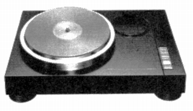
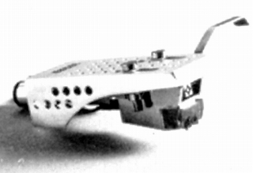
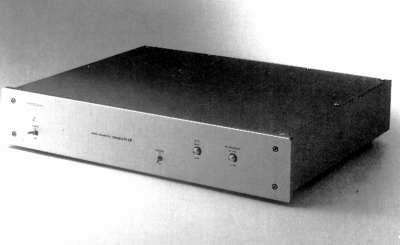
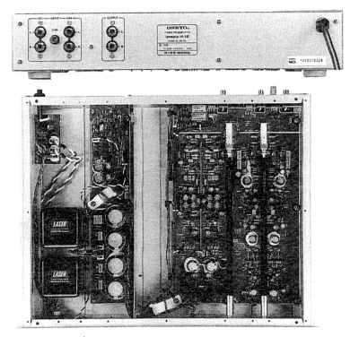

ONKYO（オンキヨー）
1946年に「大阪電気音響社」として設立されたオーディオブランド。
オーディオブランドとしては、スピーカーを得意としていた。特にホーン型スピーカーでは定評があった。「インテグラ」シリーズのアンプも長い歴史を持つ。しかし最近ではＰＣオーディオ関連に力を注いでいる。
アナログディスク関連では、総合的なブランド展開の一端としてレコードプレイヤーは出していたが、カートリッジやアームなどについてはあまり熱心ではなかった。管理人の手元資料ではカートリッジが1件あるのみであり、それも4チャンネルステレオのCD-4対応品である。他に1990年代にフォノイコライザーアンプを発表しているが、これは当時展開していた高級プリメイン、クエストシリーズがフォノ入力を省略したための補完処置である。

（1980年代初頭に唯一発売した高級ターンテーブル、PX-100M。当時\500,000）
�T.カートリッジ
OC410-M

■価格 9,900円
■発電方式 MM型
■出力電圧 1.5mV
■針圧 2.0g±0.3g
■再生周波数帯域 10-50,000Hz
■負荷抵抗
■自重 13.5g
■交換針
■発売
■販売終了
■備考 価格は1973年頃のもの
4チャンネル(CD-4）対応機
�U.フォノ・イコライザー
H-1E


■価格 120,000円
■フォノイコライザーアンプ
■入力レベル MM
3.0mV/47kΩ
MC 0.15mV/100Ω
■出力レベル 300mV/200Ω
■ＳＮ比 MM 88dB/5mV入力時、MC
80dB/0.5mV入力時
■入力端子 2系統(MM・NC)
■重量 6.6kg
■寸法 W43.5×H8.5×D35.9�p
■発売
1994年10月
■販売終了 年頃
■備考 価格は1994年頃のもの
MC昇圧はヘッドアンプ。
MCカートリッジ・インピーダンス切替(HIGH/LOW)